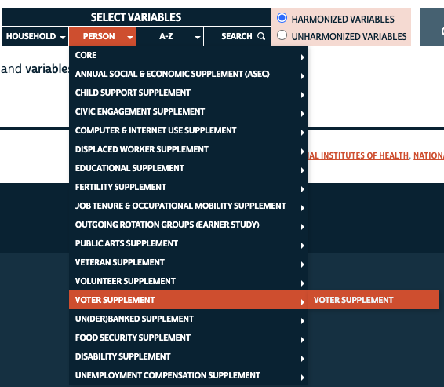
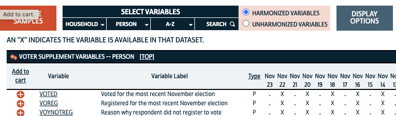
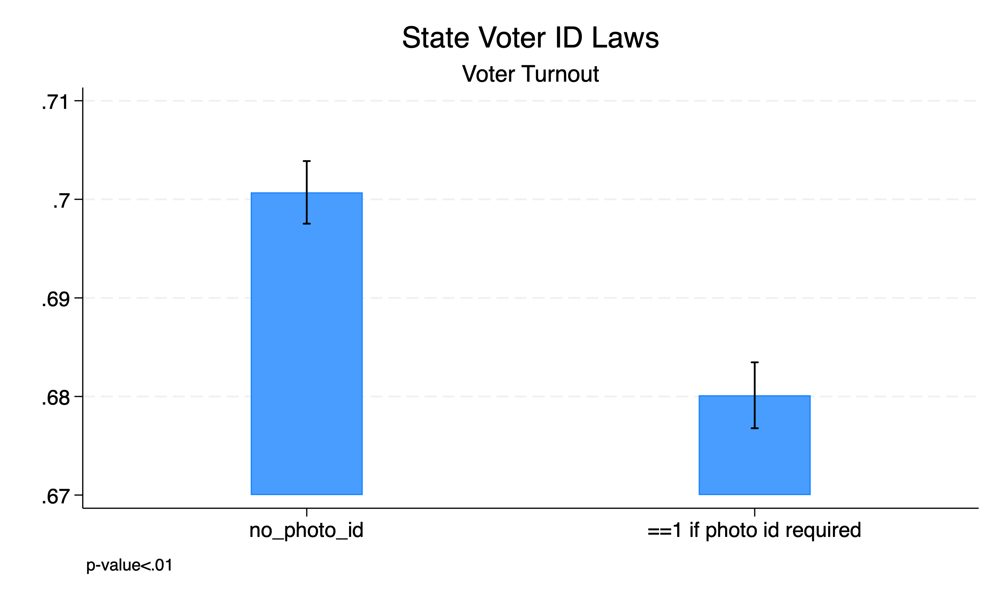
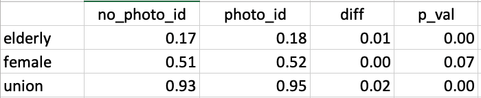

** Set Path **
cd "/Users/egong@middlebury.edu/Library/CloudStorage/Dropbox/Middlebury/Course_Archieve/Spring_2026/ECON_0111/2_Assignments/Labs/Lab_8_ttest_2/"ECON 111 - Lab 8: Hypothesis Testing - t-tests
Voter ID Laws
Preliminaries
Before beginning this lab, make sure you’ve:
Created a folder “Lab 8”
Downloaded the necessary data into the folder from the course site
Voting ID Laws
Ballotpedia tracks voter id laws (https://ballotpedia.org/Voter_identification_laws_by_state). Let’s import the excel sheet.
import excel "voter_id.xlsx", sheet("data") firstrow clear
des
sum(5 vars, 51 obs)
Contains data
Observations: 51
Variables: 5
-------------------------------------------------------------------------------
Variable Storage Display Value
name type format label Variable label
-------------------------------------------------------------------------------
state str20 %20s state
st str2 %9s st
state_fips byte %10.0g state_fips
non_photo_id byte %10.0g non_photo_id
photo_id byte %10.0g photo_id
-------------------------------------------------------------------------------
Sorted by:
Note: Dataset has changed since last saved.
Variable | Obs Mean Std. dev. Min Max
-------------+---------------------------------------------------------
state | 0
st | 0
state_fips | 51 28.96078 15.83283 1 56
non_photo_id | 11 1 0 1 1
photo_id | 24 1 0 1 111 states have laws requiring some form of non-photo id to vote and 24 states require photo id to vote. We first need to clean the variables.
Q1: Predict what the following code will do and think about why we are doing it. Then run it.
replace non_photo_id = 0 if non_photo_id==.
label var non_photo_id "==1 if id required"
replace photo_id = 0 if photo_id==.
label var photo_id "==1 if photo id required"
save voter_id.dta, replace(40 real changes made)
(27 real changes made)
file voter_id.dta savedCPS Voting Supplement
The CPS adds additional questions about voting behavior in their Nov surveys during national election years (Presidential and mid-terms for Congress).


Let’s open the data.
use cps_vote.dta, clear
des voted
tab voted
Variable Storage Display Value
name type format label Variable label
-------------------------------------------------------------------------------
voted byte %8.0g VOTED voted for the most recent
november election
voted for the |
most recent |
november |
election | Freq. Percent Cum.
----------------+-----------------------------------
did not vote | 47,844 18.83 18.83
voted | 106,870 42.05 60.88
refused | 2,953 1.16 62.04
don't know | 3,271 1.29 63.33
no response | 21,605 8.50 71.83
not in universe | 71,590 28.17 100.00
----------------+-----------------------------------
Total | 254,133 100.00Q2: Why do you think there are so many individuals who are “not in universe”?
Generate an indicator if you voted in the last Nov election if eligible.
label list VOTED
gen voted_last = 1 if voted==2
replace voted_last = 0 if voted==1
label var voted_last "==1 if voted in Nov election"VOTED:
1 did not vote
2 voted
96 refused
97 don't know
98 no response
99 not in universe
(147,263 missing values generated)
(47,844 real changes made)We’re going to clean up additional variables by generating multiple indicators.
Q3: Review the following code that is used to clean the dataset and generate new variables. Predict what the code will do and the rationale. You can then copy and paste it from the DO file “Lab_8_Clean_CPS”. Then run it.
gen elderly = 1 if age>=65 & age<.
replace elderly = 0 if age<65
label var elderly "==1 if +65 or older"
des sex
label list SEX
gen female = 1 if sex==2
replace female = 0 if sex==1
des citizen
label list CITIZEN
gen citizen_US = 1 if (citizen>=1 & citizen<=4)
replace citizen_US = 0 if citizen==5
label var citizen_US "==1 if US Citizen"
sum hourwage2, detail
replace hourwage2=. if hourwage2==999.99
des educ
label list EDUC
gen college = 1 if (educ>=111 & educ<=125)
replace college = 0 if (educ>=2 & educ<=110)
label var college "==1 if college degree"
des diffany
label list DIFFANY
gen disability = 1 if (diffany==2)
replace disability= 0 if diffany==1
des union
label list UNION
gen union_mem = 1 if union==2
replace union_mem = 0 if (union==1 | union==3)
des marst
label list MARST
gen married = 1 if (marst==1 | marst==2)
replace married = 0 if (marst>=3 & marst<=7)
save cps_vote_clean.dta, replace(210,042 missing values generated)
(210,042 real changes made)
Variable Storage Display Value
name type format label Variable label
-------------------------------------------------------------------------------
sex byte %8.0g SEX sex
SEX:
1 male
2 female
9 niu
(123,518 missing values generated)
(123,518 real changes made)
Variable Storage Display Value
name type format label Variable label
-------------------------------------------------------------------------------
citizen byte %8.0g CITIZEN citizenship status
CITIZEN:
1 born in u.s
2 born in u.s. outlying
3 born abroad of american parents
4 naturalized citizen
5 not a citizen
9 niu
(14,883 missing values generated)
(14,883 real changes made)
hourly wage (rounded)
-------------------------------------------------------------
Percentiles Smallest
1% 10 .05
5% 22 .05
10% 999.99 1 Obs 254,133
25% 999.99 1 Sum of wgt. 254,133
50% 999.99 Mean 936.8897
Largest Std. dev. 240.8409
75% 999.99 999.99
90% 999.99 999.99 Variance 58004.32
95% 999.99 999.99 Skewness -3.555246
99% 999.99 999.99 Kurtosis 13.64162
(237,807 real changes made, 237,807 to missing)
Variable Storage Display Value
name type format label Variable label
-------------------------------------------------------------------------------
educ int %8.0g EDUC educational attainment recode
EDUC:
0 niu or no schooling
1 niu or blank
2 none or preschool
10 grades 1, 2, 3, or 4
11 grade 1
12 grade 2
13 grade 3
14 grade 4
20 grades 5 or 6
21 grade 5
22 grade 6
30 grades 7 or 8
31 grade 7
32 grade 8
40 grade 9
50 grade 10
60 grade 11
70 grade 12
71 12th grade, no diploma
72 12th grade, diploma unclear
73 high school diploma or equivalent
80 1 year of college
81 some college but no degree
90 2 years of college
91 associate's degree, occupational/vocational program
92 associate's degree, academic program
100 3 years of college
110 4 years of college
111 bachelor's degree
120 5+ years of college
121 5 years of college
122 6+ years of college
123 master's degree
124 professional school degree
125 doctorate degree
999 missing/unknown
(190,404 missing values generated)
(143,309 real changes made)
Variable Storage Display Value
name type format label Variable label
-------------------------------------------------------------------------------
diffany byte %8.0g DIFFANY any difficulty
DIFFANY:
0 niu
1 no difficulty
2 has difficulty
(228,140 missing values generated)
(180,133 real changes made)
Variable Storage Display Value
name type format label Variable label
-------------------------------------------------------------------------------
union byte %8.0g UNION union membership
UNION:
0 niu
1 no union coverage
2 member of labor union
3 covered by union but not a member
(251,278 missing values generated)
(24,571 real changes made)
Variable Storage Display Value
name type format label Variable label
-------------------------------------------------------------------------------
marst byte %8.0g MARST marital status
MARST:
1 married, spouse present
2 married, spouse absent
3 separated
4 divorced
5 widowed
6 never married/single
7 widowed or divorced
9 niu
(146,601 missing values generated)
(99,506 real changes made)
file cps_vote_clean.dta savedWe can now merge the data with the state-level voter id data.
use cps_vote_clean.dta, clear
rename statefip state_fips
merge m:1 state_fips using voter_id
drop _merge
save cps_vote_idlaw.dta, replace
Result Number of obs
-----------------------------------------
Not matched 0
Matched 254,133 (_merge==3)
-----------------------------------------
file cps_vote_idlaw.dta savedHypothesis Testing (t-tests)
We can see if there is a difference in voting between states with voter id laws and those without.
prtest voted_last, by(photo_id)
ttest voted_last, by(photo_id)
Two-sample test of proportions 0: Number of obs = 79951
1: Number of obs = 74763
------------------------------------------------------------------------------
Group | Mean Std. err. z P>|z| [95% conf. interval]
-------------+----------------------------------------------------------------
0 | .7007042 .0016196 .6975298 .7038785
1 | .6801225 .0017059 .6767791 .6834659
-------------+----------------------------------------------------------------
diff | .0205817 .0023522 .0159714 .025192
| under H0: .0023514 8.75 0.000
------------------------------------------------------------------------------
diff = prop(0) - prop(1) z = 8.7530
H0: diff = 0
Ha: diff < 0 Ha: diff != 0 Ha: diff > 0
Pr(Z < z) = 1.0000 Pr(|Z| > |z|) = 0.0000 Pr(Z > z) = 0.0000
Two-sample t test with equal variances
------------------------------------------------------------------------------
Group | Obs Mean Std. err. Std. dev. [95% conf. interval]
---------+--------------------------------------------------------------------
0 | 79,951 .7007042 .0016196 .4579525 .6975298 .7038786
1 | 74,763 .6801225 .0017059 .466432 .676779 .683466
---------+--------------------------------------------------------------------
Combined | 154,714 .6907584 .001175 .4621824 .6884554 .6930615
---------+--------------------------------------------------------------------
diff | .0205817 .0023508 .0159741 .0251892
------------------------------------------------------------------------------
diff = mean(0) - mean(1) t = 8.7552
H0: diff = 0 Degrees of freedom = 154712
Ha: diff < 0 Ha: diff != 0 Ha: diff > 0
Pr(T < t) = 1.0000 Pr(|T| > |t|) = 0.0000 Pr(T > t) = 0.0000Q4: What’s the difference with the results from prtest vs ttest?
Now let’s do the same t-test for all 18-year olds (who are just able to vote).
ttest voted_last if age==18, by(photo_id)
Two-sample t test with equal variances
------------------------------------------------------------------------------
Group | Obs Mean Std. err. Std. dev. [95% conf. interval]
---------+--------------------------------------------------------------------
0 | 1,078 .4350649 .0151067 .4959956 .4054231 .4647068
1 | 1,023 .3900293 .0152573 .4879951 .3600901 .4199685
---------+--------------------------------------------------------------------
Combined | 2,101 .4131366 .010745 .4925142 .3920647 .4342085
---------+--------------------------------------------------------------------
diff | .0450356 .02148 .0029113 .0871599
------------------------------------------------------------------------------
diff = mean(0) - mean(1) t = 2.0966
H0: diff = 0 Degrees of freedom = 2099
Ha: diff < 0 Ha: diff != 0 Ha: diff > 0
Pr(T < t) = 0.9819 Pr(|T| > |t|) = 0.0361 Pr(T > t) = 0.0181Q5: What is the null and alternative hypothesis? What proportion of 18-year olds vote in states with voter id laws and without? What is the test statistic and what does it mean? What is the p-value and what does it mean? See if you can label the figure below.

Finally, let’s compare voting for 18-year olds who live in Delaware (non-photo id state) to those in Rhode Island (photo id state). Note that the state fips for Delaware and Rhode Island is 10 and 44 respectively.
ttest voted_last if age==18 & (state_fips==44 | state_fips==10) , by(photo_id)
Two-sample t test with equal variances
------------------------------------------------------------------------------
Group | Obs Mean Std. err. Std. dev. [95% conf. interval]
---------+--------------------------------------------------------------------
0 | 27 .4444444 .0974509 .5063697 .2441313 .6447576
1 | 18 .5555556 .1205169 .51131 .3012871 .809824
---------+--------------------------------------------------------------------
Combined | 45 .4888889 .0753592 .505525 .3370124 .6407654
---------+--------------------------------------------------------------------
diff | -.1111111 .1546795 -.423052 .2008297
------------------------------------------------------------------------------
diff = mean(0) - mean(1) t = -0.7183
H0: diff = 0 Degrees of freedom = 43
Ha: diff < 0 Ha: diff != 0 Ha: diff > 0
Pr(T < t) = 0.2382 Pr(|T| > |t|) = 0.4764 Pr(T > t) = 0.7618Q6: How do you interpret these results?
Presenting Hypothesis Test Results
The results generated by a t-test are not visually stunning.
ttest voted_last, by(photo_id)
Two-sample t test with equal variances
------------------------------------------------------------------------------
Group | Obs Mean Std. err. Std. dev. [95% conf. interval]
---------+--------------------------------------------------------------------
0 | 79,951 .7007042 .0016196 .4579525 .6975298 .7038786
1 | 74,763 .6801225 .0017059 .466432 .676779 .683466
---------+--------------------------------------------------------------------
Combined | 154,714 .6907584 .001175 .4621824 .6884554 .6930615
---------+--------------------------------------------------------------------
diff | .0205817 .0023508 .0159741 .0251892
------------------------------------------------------------------------------
diff = mean(0) - mean(1) t = 8.7552
H0: diff = 0 Degrees of freedom = 154712
Ha: diff < 0 Ha: diff != 0 Ha: diff > 0
Pr(T < t) = 1.0000 Pr(|T| > |t|) = 0.0000 Pr(T > t) = 0.0000A better way to present these results is in the following code block.
Q7: Can you predict what will happen in the following lines before executing it?
ttest voted_last, by(photo_id)
return list
matrix results = r(mu_1), r(mu_1)-1.96*(r(sd_1)/sqrt(r(N_1))) , r(mu_1)+1.96*(r(sd_1)/sqrt(r(N_1)))
matrix results = results \ r(mu_2), r(mu_2)-1.96*(r(sd_2)/sqrt(r(N_2))) , r(mu_2)+1.96*(r(sd_2)/sqrt(r(N_2)))
matrix colnames results = mean ll ul
matrix rownames results = no_photo_id photo_id
matrix list results
coefplot matrix(results[,1]), ci((results[,2] results[,3] )) ///
vertical recast(bar) barwidth(0.25) ciopts(recast(rcap) lcolor(black)) citop ///
title(State Voter ID Laws) subtitle(Voter Turnout) ///
note("p-value<.01")
graph export "vote_ttest.png", replace
The figure above presents the 95% CI and the footnote reveals the two-tail p-value for the t-test. It is typically a more aesthetic way of presenting a single t-test.
Q8: Can we say that photo id laws are causing a decrease in voter turnout? Why or why not?
Minor technicality . . . .
When dealing with sample proportions (percentages), we technically should use prtest instead of ttest. Try it and note what differences you find. In practice, we just stick to ttest. Why? We’ll see it come into play in a moment.
Correlation vs. Causation
Confounders or omitted variables may explain the results. For instance, suppose states with photo id laws also have fewer elderly people AND elderly people are more likely to vote compared to younger people.
Another confounder might be gender. Perhaps there are fewer women in photo id states AND women are more likely to vote than men.
To assess these confounders, we can do ttests which compares the means for each variable (elderly, female) between states with and without photo id laws. We generate a table with these results and it is commonly known as a “balance table”. The reason? Ideally, we would like all possible confounders to be balanced or similar between the two types of states. This would assuage concerns that the differences are due to these confounders.
Balance Table
ttest elderly, by(photo_id)
return list
matrix balance = r(mu_1) , r(mu_2), r(mu_2)-r(mu_1), r(p)
foreach x of varlist female citizen_US {
ttest `x' , by(photo_id)
matrix balance = balance \ r(mu_1) , r(mu_2), r(mu_2)-r(mu_1), r(p)
}
matrix colnames balance = no_photo_id photo_id diff p_val
matrix rownames balance = elderly female citizen_US
matrix list balance
Two-sample t test with equal variances
------------------------------------------------------------------------------
Group | Obs Mean Std. err. Std. dev. [95% conf. interval]
---------+--------------------------------------------------------------------
0 | 133,787 .1687683 .001024 .3745485 .1667612 .1707753
1 | 120,346 .1787513 .0011045 .3831455 .1765866 .180916
---------+--------------------------------------------------------------------
Combined | 254,133 .1734958 .0007512 .378676 .1720235 .174968
---------+--------------------------------------------------------------------
diff | -.009983 .0015043 -.0129314 -.0070346
------------------------------------------------------------------------------
diff = mean(0) - mean(1) t = -6.6362
H0: diff = 0 Degrees of freedom = 254131
Ha: diff < 0 Ha: diff != 0 Ha: diff > 0
Pr(T < t) = 0.0000 Pr(|T| > |t|) = 0.0000 Pr(T > t) = 1.0000
scalars:
r(ub_diff) = -.0070345837832508
r(lb_diff) = -.0129314186259734
r(mu_diff) = -.0099830012046121
r(ub_combined) = .1749680379750318
r(lb_combined) = .1720234979530059
r(se_combined) = .0007511683942087
r(mu_combined) = .1734957679640189
r(N_combined) = 254133
r(ub_2) = .1809159803235807
r(lb_2) = .1765865540356835
r(se_2) = .0011044546683087
r(ub_1) = .1707752926151945
r(lb_1) = .1667612393348455
r(se_1) = .001024002735967
r(level) = 95
r(sd) = .378676049832242
r(sd_2) = .3831454964911139
r(sd_1) = .3745485108185696
r(se) = .0015043150802859
r(p_u) = .999999999983879
r(p_l) = 1.61210098313e-11
r(p) = 3.22420196627e-11
r(t) = -6.636243520682345
r(df_t) = 254131
r(mu_2) = .1787512671796321
r(N_2) = 120346
r(mu_1) = .16876826597502
r(N_1) = 133787
Two-sample t test with equal variances
------------------------------------------------------------------------------
Group | Obs Mean Std. err. Std. dev. [95% conf. interval]
---------+--------------------------------------------------------------------
0 | 133,787 .5122845 .0013666 .4998509 .509606 .5149629
1 | 120,346 .5158294 .0014406 .4997514 .5130058 .5186529
---------+--------------------------------------------------------------------
Combined | 254,133 .5139632 .0009915 .499806 .5120199 .5159064
---------+--------------------------------------------------------------------
diff | -.0035449 .0019857 -.0074368 .000347
------------------------------------------------------------------------------
diff = mean(0) - mean(1) t = -1.7852
H0: diff = 0 Degrees of freedom = 254131
Ha: diff < 0 Ha: diff != 0 Ha: diff > 0
Pr(T < t) = 0.0371 Pr(|T| > |t|) = 0.0742 Pr(T > t) = 0.9629
Two-sample t test with equal variances
------------------------------------------------------------------------------
Group | Obs Mean Std. err. Std. dev. [95% conf. interval]
---------+--------------------------------------------------------------------
0 | 133,787 .9296269 .0006993 .2557756 .9282564 .9309975
1 | 120,346 .9545643 .0006003 .2082585 .9533877 .955741
---------+--------------------------------------------------------------------
Combined | 254,133 .9414362 .0004658 .234807 .9405233 .9423491
---------+--------------------------------------------------------------------
diff | -.0249374 .0009316 -.0267632 -.0231116
------------------------------------------------------------------------------
diff = mean(0) - mean(1) t = -26.7697
H0: diff = 0 Degrees of freedom = 254131
Ha: diff < 0 Ha: diff != 0 Ha: diff > 0
Pr(T < t) = 0.0000 Pr(|T| > |t|) = 0.0000 Pr(T > t) = 1.0000
balance[3,4]
no_photo_id photo_id diff p_val
elderly .16876827 .17875127 .009983 3.224e-11
female .51228445 .51582936 .00354491 .07422302
citizen_US .92962694 .95456434 .0249374 1.21e-157putexcel set balance.xlsx, sheet(table_1) replace
putexcel A1 = matrix(balance), names